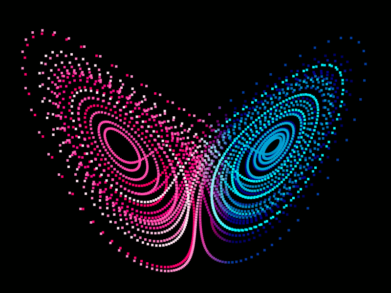

While not meant to be taken literally, this metaphor captures the essence of chaos theory: small changes in the initial conditions of a system can lead to large and unpredictable outcomes. This idea, often referred to as the butterfly effect, lies at the heart of chaos theory and highlights the sensitive dependence on initial conditions seen in many natural and mathematical systems.
“Chaos theory states that within the apparent randomness of chaotic complex systems, there are underlying patterns, interconnection, constant feedback loops, repetition, self-similarity, fractals and self-organization. ” Basically, complex systems are very difficult to predict and small changes in initial values result in completely different results as time increases.
One common example of a chaotic system is a double pendulum. Now, a double pendulum is an example of deterministic chaos. When calculating how a double pendulum moves, we are able to calculate exactly where each of the masses will be located at any given time, it's deterministic. When inputting the same inputs into our equations, we get the same outputs. So why is it an example of a chaotic system? Well, in real life, it is extremely difficult to get perfect measurements. The slightest change in a measurement or even a change in significant figures will result in the position of the double pendulum completely changing. This can be shown in the double pendulum at the top of the article. Ten pendulums are displayed, with the only difference being the theta 1 value being 0.001 degrees off. Within a few seconds we see that all the pendulums break off into completely different pathways. A quote that describes this well comes from Edward Lorenz, a mathematician that laid the foundations of chaos theory:
The idea of Chaos Theory stems from mathematician and meteorologist Edward Lorenz in the 1960s. Throughout his work as a meteorologist, he came to the conclusion that weather patterns are nonlinear and can be volatile. This was enforced when one day he decided to go back and recreate a past weather sequence. When he initially made the calculations a year prior, he used six significant figures, but when running through them again he used three. One would expect this decimal change to be insignificant, but that was far from the truth. The two weather sequences were vastly different, showing that seemingly negligible factors can completely change outcomes (Halton).
Lorenz is also known for the famous Lorenz Attractor. This model is commonly associated with the Butterfly Effect, given it looks like… a butterfly. This phenomenon occurs when we graph the position of a particle based on these three differential equations:
x' = σ(y - x)
y' = x(r - z) - y
z' = xy - bz
When given an arbitrary first point, future points are calculated based on the previous. What is neat about this model is the point never touches the same point twice. If it did, it would no longer be chaotic as there is evidence of a pattern forming. Going further, let's say we initialize 100 points with different starting values. Points on the edges will speed off into different directions, but points within a certain radius will form an attractor. Although the points in the attractor follow a similar formation, none of the points retrace their steps or cross pathways. Difference in their starting point results in difference in their futures (Kastorf).